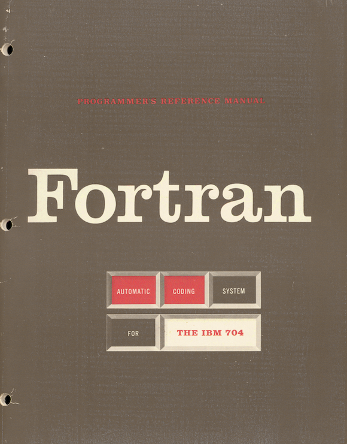
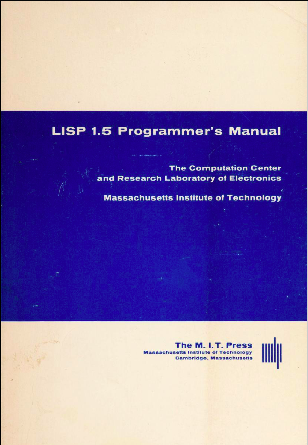

Quando se trata de linguagens de programação, Lisp é quase a
definição de minimalismo: tem sintaxe e semântica que cabem em
uma única página; promove a escrita de programas com base em um único
conceito de linguagem; e usa a mesma estrutura de dados com que
representa os dados que manipula e os próprios programas escritos na
lingugagem. E é exatamente por isso que os conceitos fundamentais de
Lisp podem ser apresentados em poucos minutos. Esse é o objetivo desta
aula. Veremos um brevíssimo histórico de Lisp e, logo em seguida, sua
sintaxe e semântica, seguida de alguns pequenos exemplos de
programas.
Um pouco de contexto
histórico
Lisp significa, literalmente, processador de listas. Imagino
que o nome possa despertar certa curiosidade e até algum espanto.
Afinal, não é fato que toda linguagem processa listas? O que há de tão
especial nisso?
Para entender o que motivou o nome de Lisp precisamos de um pouco de
contexto histórico. E, sim!, saber o que motivou a escolha do nome da
linguagem ajuda a entender a linguagem em si. Então peço que exercite um
pouco sua paciência e continue lendo.
 A época a que me refiro é o final dos anos
1950, logo após a segunda grande guerra e início da guerra fria. Na
computação, era o momento da criação das primeiras linguagens de
programação. A primeira versão da primeira linguagem de programação de
alto nível, Fortran, foi publicada pela IBM em 1957, para o IBM 704. Nessa época,
apenas instituições governamentais, grandes universidades e grandes
empresas podiam arcar com os custos de ter computadores. De fato,
estima-se que apenas algumas centenas de computadores existia no mundo.
Além disso, as aplicações eram essencialmente voltadas para grandes
problemas de engenharia espacial, militar e/ou química. Os computadores
eram essencialmente super calculadoras e as linguagens da época eram
voltadas para atender a essa demanda. É o que chamamos hoje de
computação numérica.
 Lisp foi criada por John
McCarthy em 1958, apenas um ano após a criação de Fortran. McCarthy,
contudo, desenvolveu Lisp com o propósito de criar aplicações
significativamente diferentes das que eram feitas naquela época: ele
queria viabilizar o desenvolvimento de aplicações de Inteligência
Artificial (termo que, por sinal, foi criado pelo próprio McCarthy
para o famoso Workshop de Dartmouth, de 1956 em que reuniu os cientistas
que hoje são chamados de pais fundadores da IA). McCarthy
percebeu que a natureza dos dados e das computações necessárias na IA
não eram de natureza numérica, mas simbólica.
Pais fundadores da IA
McCarthy percebeu que os dados com os quais a IA precisava trabalhar
são não numéricos. Tanto os dados de partida (ou de entrada, se
você preferir), como os dados intermediários (representações internas),
e até os dados resultantes (ou saídas) das computações da IA podem ser,
tipicamente, expressos como sequências de símbolos. Pense, por
exemplo, em aplicações capazes de resolver equações algébricas passo a
passo. Ou que qsejam capazes de fazer provas de teoremas matemáticos. Ou
de jogar xadrez e/ou outros jogos que requerem inteligência. Ou
ainda de processar e produzir texto em linguagem natural. Como você
representaria os dados? Claramente, nenhuma dessas aplicações requer
cálculo numérico no sentido em que o valor resultante esperado é a mera
aplicação de uma sequencia de cálculos predefinidos. De fato, muitas
vezes não há dados numéricos a processar. Por exemplo, equações podem
ser meramente literais e podem ser resolvidas apenas reescrevendo as
expressões originais e combinando-as a outras até que se chegue a certas
formas específicas, aceitas como a solução almejada.
Listas como estruturas de dado McCarthy percebeu que
aplicações de IA, tipicamente, precisam manipular expressões
simbólicas e que para representar e processar tais dados no
computador, a estrutura precisa ser dinâmica. E percebeu que listas
encadeadas e dinâmicas (em oposição a arrays de natureza
estática de Fortran) eram a estrutura de dados natural. Se isso parece
óbvio no contexto atual, lembre-se que estamos falando de um
tempo em que apenas a primeira linguagem de programação existia e a
menos de um ano de seu lançamento. Não havia, à época, nenhuma linguagem
de programação com conceitos de apontadores ou bibliotecas com listas
encadeadas, nem quaisquer facilidades desse tipo. McCarthy não apenas
percebeu a generalidade da estrutura de dados para essas aplicações como
ainda a propõe como a estrutura de dados central de toda a linguagem de
programação proposta.
A “cara” de código Lisp
Um dos aspectos mais marcantes de Lisp é sua sintaxe. A linguagem é
marcada por um aparente uso exagerado de parênteses (além de
que são usados de forma pouco convencional), por uma estranha ordem de
operadores e operandos e pela falta de vírgulas ou pontos-e-vírgulas
como separadores. Mas, o que pode parecer mero detalhe se revela, na
verdade, como um dos aspectos mais importantes da linguagem. Razão pela
qual é quase impossível deixar de reconhecer qualquer dialeto Lisp.
Sugiro que você navegue pelos links abaixo, procurando entender as
funções mais simples (ainda que não em detalhes, mas apenas vendo os
nomes das funções e a organização geral do código). Os links levam ao
GitHub da implementação de algumas bibliotecas de Clojure.
Antes de prosseguirmos, contudo, é importante ressaltar que Lisp não
é exatamente uma linguagem, mas uma família de linguagens. É que graças à
simplicidade dos conceitos básicos que a definem, inúmeras linguagens
semelhantes foram criadas e coexistem. Clojure é um dos chamados
dialetos Lisp.
Vale ressaltar ainda que Clojure não é apenas um dialeto. É, de
fato, um dos mais dialetos modernos da família e de maior sucesso na
atualidade, com várias características únicas, como veremos. Nesta aula,
contudo, focaremos nos aspectos gerais que se aplicam a praticamente
qualquer outro dialeto Lisp, exceto por detalhes menores. Ao final da
aula, você deve poder executar os exemplos que veremos em um REPL
Clojure ou, com mínimos ajustes, no REPL de qualquer outro dialeto
(Scheme, Common Lisp, Picolisp, Racket, Hy, etc).
Expressões Simbólicas ou
s-expressões
O principal conceito
fundamental de Lisp é o de expressões simbólicas ou
s-expressões, como são mais conhecidas. Normalmente, usamos o
termo expressão simbólica para nos referirmos ao conceito mais
abstrato e s-expressão para o conceito formal definido por
Lisp. A ideia é que uma s-expressão é a unidade básica de expressão de
um dado em Lisp. Uma s-expressão ou é um dado atômico (um elemento
indivisível) ou uma lista (um dado composto). Em termos de
linguagem, dificilmente a opção de McCarthy poderia ter sido mais
simples e minimalista que isto.
Átomos são escritos de acordo com regras léxicas convencionais para a
escrita de números, strings (além de alguns mais específicos de Lisp que
veremos adiante). E listas são escritas como sequências de elementos
separadas por espaços e delimitadas por parênteses (é daqui que vêm os
famosos parênteses de Lisp). Observe: não há vírgulas, nem qualquer
outro elemento sintático. Só parênteses antes e depois da sequência de
elementos e espaços para separá-los. Por fim, é importante observar que
os elementos contidos nas listas podem ser, eles mesmos, s-expressões.
Ou seja, a definição é recursiva.
Mas como expressar código em
Lisp?
Claramente, s-expressões nos permitem usar Lisp para expressar estrutura
de dados complexas. Mas a questão é: como expressar operações ou
comportamentos que manipulem esses dados? A resposta se baseia na
observação, por parte de McCarthy, de que código é apenas uma forma
especial de dado, mas ainda é apenas um dado. E que, como tal, pode ser
representado, usando a mesma estrutura usada para os demais dados:
s-expressões.
Para isso, contudo, são necessárias algumas convenções para permitir
que o interpretador saiba como processar essas operações.
A ideia de McCarthy foi basear
a notação na chamada notação de prefixo (ou polonesa ou ainda
polonesa de Cambridge) para expressar operações e/ou comportamentos (a
notação havia sido inventada anos antes em um contexto diferente;
McCarthy apenas percebeu o quão apropriada a notação era para
simplificar o processo de parsing). Na notação proposta, o primeiro
elemento de uma lista é sempre um símbolo operacional que determina a
operação que o programador quer executar; e os demais elementos são os
argumentos da função.
Observe que a notação tem várias propriedades interessantes:
graças à adição de parênteses, a notação é naturalmente flexível,
permitindo que um número variável de argumentos seja suportado;
garante uniformidade, minimizando o esforço necessário para o
parsing da linguagem; de fato, as s-expressões de código são a
própria linearização da árvore de sintaxe abstrata do código (tal como
seria provido por um encaminhamento em pré-ordem);
dá consistência à linguagem, garantindo que a linguagem acomoda
facilmente a adição de novos elementos, sem afetar a análise sintática e
a “cara” da linguagem; razão pela qual Lisp é frequentemente usada no
estudo e projeto de linguagens de programação;
combinada à natureza recursiva de s-expressões, a notação de prefixo
se presta com facilidade ao aninhamento de expressões e, com isso,
promove a composição de expressões complexas a partir de outras mais
simples;
Semântica
A semântica de código Lisp é definida em termos de avaliação de
expressões, de forma bastante semelhante ao processo de avaliação
de expressões que aprendemos ainda no ensino fundamental. A ideia é que
cada lista que representa código e que, portanto, está no formato acima
descrito (a chamada notação polonesa) será avaliada, aplicando a função
associada ao símbolo funcional aos argumentos que se seguem a ele na
lista. Contudo, se uma lista contém sub-listas, por convenção, o
interpretador Lisp irá sempre avaliar primeiro as listas que estão em
posição de argumento antes. Esta forma de avaliação é conhecida como
ordem aplicativa de avaliação (applicative order
evaluation).
Formas especiais
Em Lisp, uma expressão que possa ser executada pelo
interpretador, sem incorrer em erro, é chamada de forma.
Observe que nem toda s-expressão é uma forma, já que várias delas podem
resultar em erros.
A forma vista acima, em que um símbolo funcional é usado na primeira
posição (que, por sinal, é conhecida em Lisp como posição de função) e
em que argumentos são usados nas demais posições é conhecida como
forma de aplicação de função. O nome reflete o fato de que ao
processar uma s-expressão nessa forma, o interpretador irá
aplicar a função aos argumentos.
Há, contudo, outras formas em Lisp que não são de natureza funcional
e, portanto, não correspondem a aplicações de função. Abaixo apresento
três das principais formas especiais de Lisp: def,
fn e defn.
A forma especial def é certamente o mecanismo de abstração mais básico
proporcionado por Lisp. . Ele permite associar um
símbolo a um valor na memória. Assim, a forma (def a 123),
por exemplo, faz o interpretador ligar o nome a ao valor
123. A partir desse momento, sempre que fizermos referência
ao símbolo a, o interpretador saberá que deve avaliar
a como sendo o valor 123.
Um pouco de teoria aqui Observe, contudo, que
def não é de natureza funcional. Ele proporciona o que
chamamos de efeito colateral, porque altera a memória. Mais
adiante revisaremos o conceito de função, mas, por ora, apenas recorde
que uma função é um mapeamento de elementos de um conjunto (o domínio)
em outro (o contra-domínio). Quando avaliamos a forma
(+ 1 2) esperamos que a avaliação da expressão produza
3 (ou que retorne 3, como diríamos em outras
linguagens). Esse 3 é o valor do contra-domínio que está
vinculado ao par de valores 1 e 2, através do
mapeamento caracterizado pela função +. Quando avaliamos
(def a 123), por outro lado, o fazemos almejando efeito
colateral (a criação de um vínculo duradouro de a ao
valor 123) e não por qualquer valor que vá ser retornado
pela avaliação da forma (def a 123).
Definição de funções
E, finalmente, de posse dos conceitos de s-expressões, de formas e de
formas especiais, posso apresentar como podemos definir funções em Lisp.
Perceba que até o momento, vimos apenas como aplicar (usar) funções. Mas
não vimos ainda como definir novas funções.
Primeiro, relembre que a distinção entre código e dados foi
significativamente enfraquecida. Para programar em Lisp, e em qualquer
outra linguagem funcional, por sinal, compreender que funções são apenas
um tipo de dado é essencial. Da mesma forma que listas, strings e
números, funções são dados em Lisp. E justamente por ser mais
um tipo de dado, a linguagem precisa proporcionar alguma forma de
escrever expressões que descrevam funções. Mais uma vez,
usaremos s-expressões e, em particular, usaremos uma nova forma
especial: fn (em outros dialetos Lisp, é comum o uso
do símbolo lambda para o mesmo fim). Esta forma especial
permite escrever uma expressão que cria um objeto função. Atenção: isto
apenas cria a função, mas não a nomeia. Por isso, estas funções são
conhecidas como funções anônimas (ou lambdas, em homenagem ao
lambda cálculo que as introduziu). O código abaixo, cria uma função que
soma dois números.
(fn [x y] (+ x y))
Analisemos essa expressão
detalhadamente. Primeiro, a expressão mais externa
(fn [x y] ...) é a forma especial de criação de funções
anônimas. O elemento [x y] é um vetor que lista os
parâmetros formais da função (veremos vetores em mais detalhe mais
adiante; por ora, apenas pense nele como sendo uma lista que usa
colchetes ao invés de parênteses). E, por fim, temos o chamado corpo
da função(+ x y) que é a expressão que será usada em
uma eventual aplicação da função (feitas as devidas substiuições dos
argumentos formais, claro). A expressão apenas define essa função, mas
não há qualquer aplicação até o momento. Abaixo, contudo, a função é
aplicada aos valores 1 e 2.
((fn [x y] (+ x y)) 12)
Na expressão acima, usamos a forma especial fn para
definir uma função e a aplicamos imediatamente aos valores 1 e 2. O
valor a ser produzido pela avaliação dessa expressão acima é
3. Vale a pena ver como se dá essa avaliação, contudo.
((fn [x y] (+ x y)) 12) ; => aplicação da função lambda(+12) ; => aplicação da função +3; forma normal resultante
Embora seja uma forma especial, é importante perceber que a avaliação
de uma expressão da forma fn produz (ou retorna) a
função criada (ou uma referência para o objeto da função na
memória, se você preferir).
Combinando
def e fn para nomear funções
Claramente, é um pouco incômodo aplicar funções lambda da forma
mostrada acima. Como falei, isso pode ser útil em algumas situações, mas
o mais normal é que queiramos definir funções com nome e invocá-las a
partir de seu nome. Observe, contudo, que você já tem tudo que precisa
para isso. Basta combinar o efeito de def ao de
fn. Veja a expressão abaixo e procure compreendê-la, com
base no que já vimos da linguagem.
(def dobro (fn [x] (*2 x)))
A expressão mais externa (def dobro ...) usa a forma
especial def para associar o símbolo dobro ao
objeto produzido pelo elemento na terceira posição da mesma lista.
Contudo, esse elemento é justamente a forma especial fn
que, como mostrei antes, produz uma função na memória. Logo, o efeito
líquido da avaliação da expressão acima é a criação da função na memória
e sua vinculação ao símbolo dobro. Isso nos permite aplicar
a função, usando o símbolo ao invés da expressão. Veja abaixo.
(def dobro (fn [x] (*2 x))) ; liga símbolo dobro à função (dobro (dobro 11)) ; => 44
A situação acima é tão comum que Lisp tem uma macro para reduzir o
que precisamos digitar. O mesmo efeito e def .. fn é obtido
usando apenas a macrodefn, como mostrado
abaixo.
(defn dobro [x] (*2 x)) ; liga símbolo dobro à função (dobro (dobro 11)) ; => 44
Mais adiante no curso esturaremos melhor o conceito de macro. Por
ora, basta saber que quando usamos defn, na prática,
estaremos usando def da forma que fizemos acima. E que isso
simplifica bastante a sintaxe.
Resumo dos conceitos
a sintaxe de Lisp é fundamentada em s-expressões
s-expressões podem ser de dois tipos
atômicas, dados primitivos da linguagem
listas, dados compostos a partir de outras s-expressões
formas são s-expressões que podem ser executadas com sucesso
forma normal (o dado primitivo)
forma de aplicação de função (código em notação de prefixo)
formas especiais (adicionam sintaxe e semântica à linguagem)